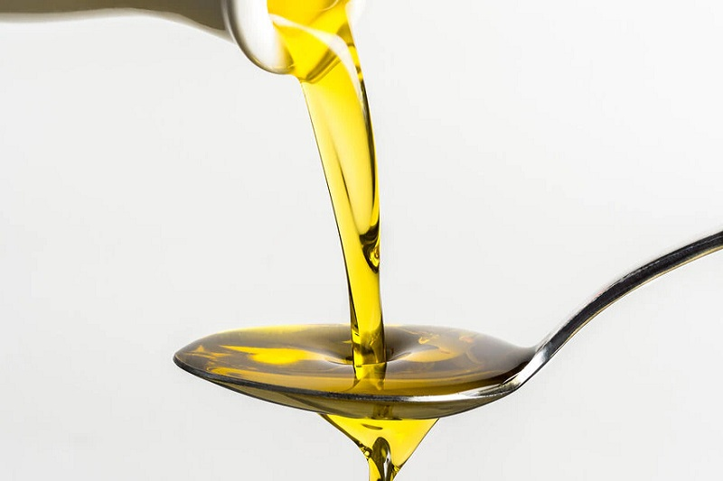
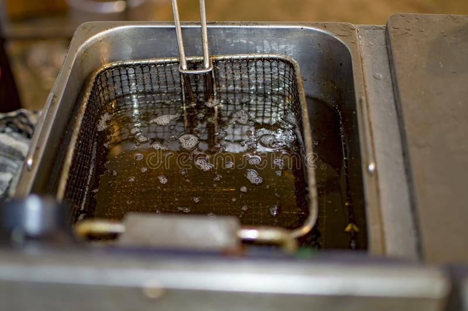
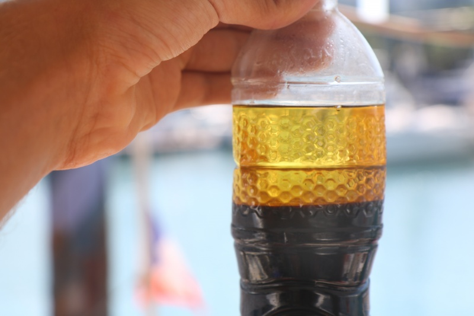

Qu'est-ce qu'un biocarburant ?
Un biocarburant est un carburant de substitution obtenu à partir de biomasse (matière première d’origine végétale, animale ou issue de déchets). Il est destiné à être utilisé dans les transports, principalement sous forme d’additifs ou de compléments aux carburants fossiles.

Huile de Cuisson

Huile de Cuisson Usagées

Decantation avec un Agent de Traitement

Biodiesel Prêt à l'Utilisation
Quels sont les différents types de biocarburants ?
On peut distinguer deux types de biocarburants :
- Les biocarburants essence : ils sont principalement composés d’éthanol, produit à partir de la fermentation de sucres issus de la betterave, la canne à sucre, le blé, le maïs ou encore la pomme de terre ;
- Les biocarburants diesel : le biodiesel (ou biogazole) qui est, lui, issu d'huiles végétales ou animales transformées chimiquement.
Dans le même temps, pour différencier les biocarburants et leurs évolutions, il est possible de distinguer trois générations de ce combustible d’avenir, issu de la biomasse :
- Les biocarburants de 1ère génération : ils sont produits, comme expliqué précédemment, à partir de matières organiques (betterave, canne à sucre ou encore céréales, pour l’éthanol), d’huiles végétales (colza, palmes, tournesol, etc.) ou de graisses animales pour produire le biodiesel ;
- Les biocarburants de 2e génération : ils sont, eux, produits à partir de biomasse dite « lignocellulosique ». Plus concrètement, ce combustible est issu du bois ou de la paille ;
- les biocarburants de 3e génération : ils se composent de biomasse aquatique, issue des algues ou des microalgues.

.png)
.png)
.png)
.png)

.png)